환경 구축 1 : 파이썬 설치
환경 구축 1 : 파이썬 설치
코스콤 CHECK-API를 활용하기 위해 파이썬 언어 환경을 설치하는 방법을 설명합니다.
CHECK-API 서비스는 일반적인 REST-API 서비스이므로 파이썬, 자바, 자바스크립트 등 어떠한 프로그래밍 언어로도 사용할 수 있습니다. 여기에서는 가장 쉽고 데이터 분석에 많이 쓰이는 파이썬 언어를 기준으로 설명합니다.
파이썬 프로그래밍 언어로 CHECK-API를 활용하기 위해서는 다음과 같은 개발 환경 설치가 필요합니다.
- 파이썬 언어 환경
- 코드 개발 환경
- 파이썬 패키지
이 글에서는 전체 개발 환경 설치의 첫번째 단계로 파이썬 언어 환경의 설치에 대해 설명합니다.
Miniforge 배포판 다운로드
파이썬 언어를 사용하기 위해서는 일단 파이썬 언어 환경 배포판(distribution)을 설치해야 합니다. 현재 다양한 파이썬 언어 환경 배포판이 있습니다만 그 중 가장 많이 사용되고 기업체에서 상용으로 사용할 수 있는 miniforge를 추천합니다. miniforge는 널리 사용되는 상업용 파이썬 배포판인 Anaconda사의 배포판과 호환되는 파이썬 언어 환경 배포판입니다. miniforge는 Anaconda사의 배포판과 달리 기업체에서도 비용없이 사용할 수 있습니다.
miniforge를 설치하기 위해서는 다음 홈페이지를 방문하여 보유한 운영체제에 맞는 설치 파일을 다운로드 받아야 합니다.
- miniforge: https://github.com/conda-forge/miniforge
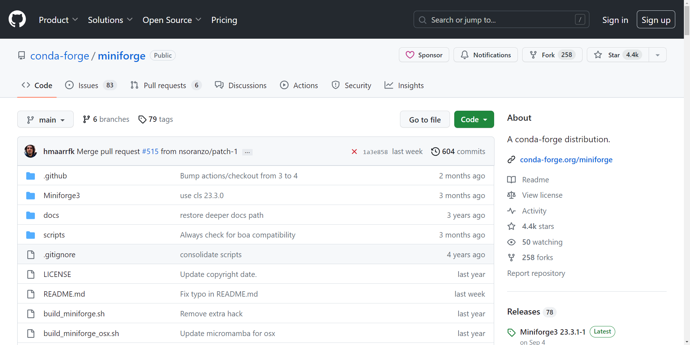
홈페이지의 아랫쪽에 다운로드를 위한 각 운영체제별 설치 파일 링크가 제공됩니다. 사용자의 운영체제에 맞는 파일을 다운로드 받습니다.
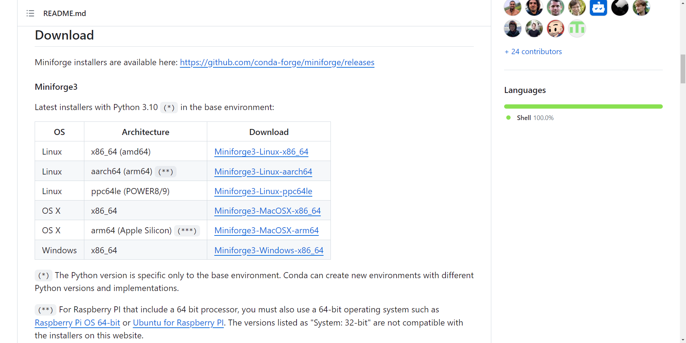
Miniforge 배포판 설치
윈도우 운영체제에서 Miniforge 설치 과정은 다음과 같습니다.
- 다운로드 화면에서 “Miniforge3-Windows-x86_64.exe” 파일을 다운로드 받습니다.
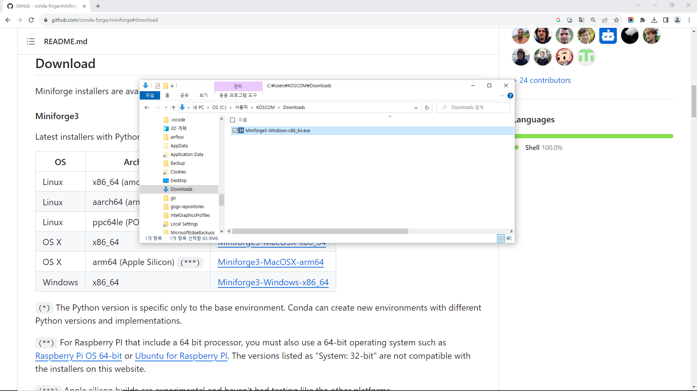
- 다운로드 받은 파일을 더블 클릭하면 다음과 같이 설치 경고화면이 나옵니다. 이 때 “추가 정보” 링크를 클릭하면 설치를 진행할 수 있습니다.
- 다음과 같이 “실행” 버튼이 나타나면 클릭하여 설치를 진행합니다.
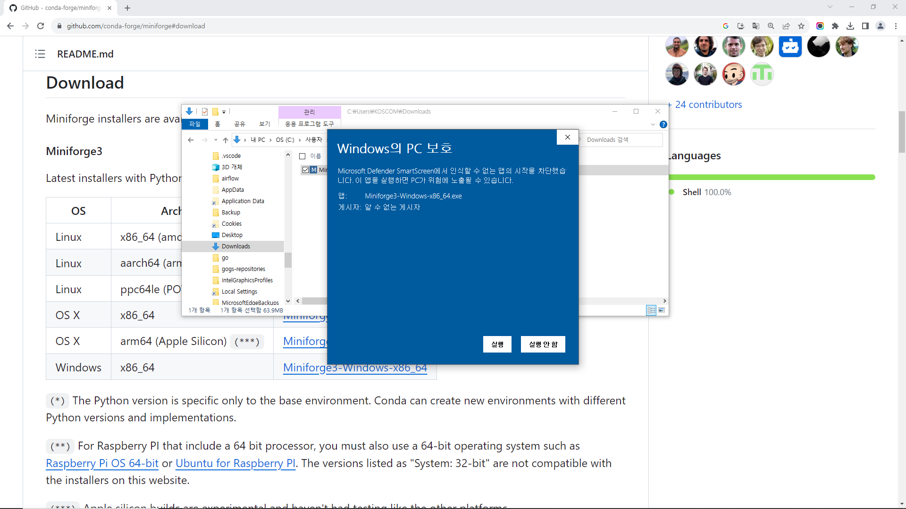
- 다음은 설치 진행 화면입니다. 진행과정에서 특별한 수정이 필요하지 않다면 모두 “Next >” 버튼을 눌러 통상적인 설치를 할 수 있습니다.
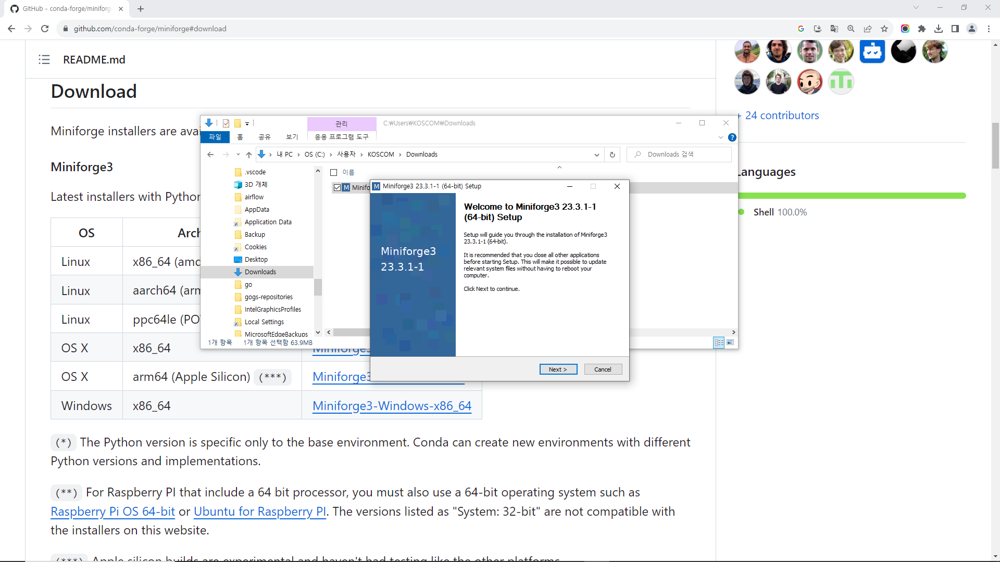
Miniforge 프롬프트에서 파이썬 사용
- 설치가 정상적으로 완료되면 좌측 하단 윈도우 로고를 클릭하여 나오는 메뉴화면에 “Miniforge3”가 추가되어 있는 것을 확인할 수 있습니다. “Miniforge3” > “Miniforge Prompt” 메뉴를 클릭하면 파이썬 실행용 Miniforge 프롬프트를 가동합니다.
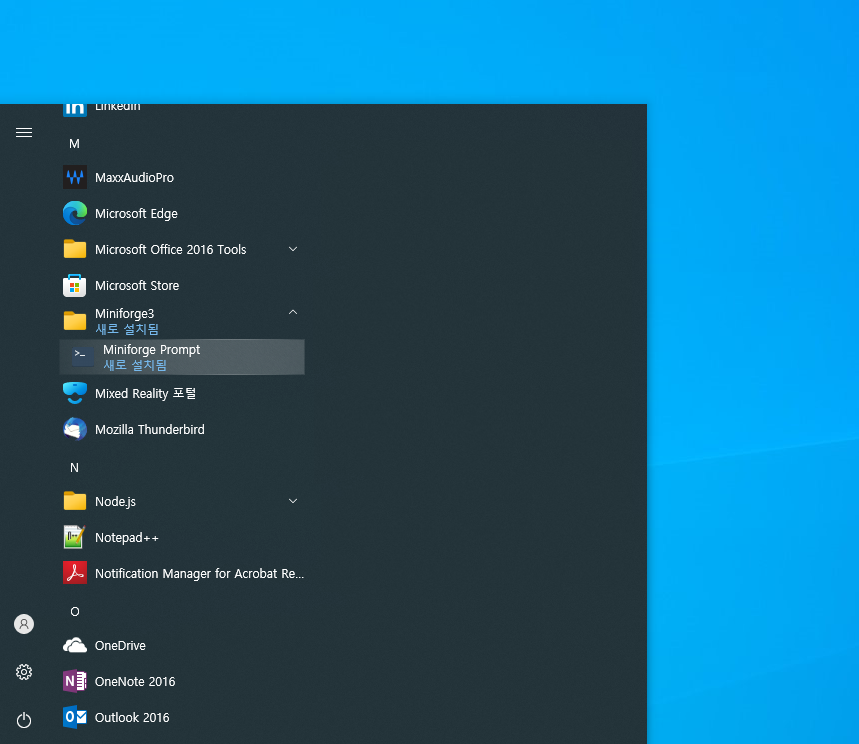
- 다음 명령으로 파이썬 설치 경로를 확인합니다.
설치 경로가 사용자 홈 디렉토리\miniforge3\python.exe인 경우 정상적으로 설치된 것입니다.
만약 결과가 여러줄로 나오는 경우 이미 다른 종류의 파이썬 배포판이 설치 되어있는 것이며 정상적인 동작에는 영향을 미치 않으므로 무시해도 됩니다. 다만 사용자 홈 디렉토리\miniforge3\python.exe 설치 경로는 추후 개발 환경 설정에 필요하므로 메모해 두시는 것이 좋습니다.
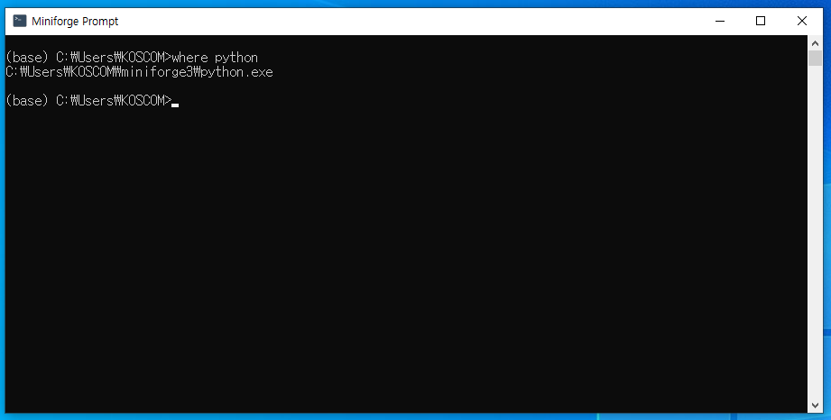
python명령으로 파이썬 인터프리터를 시작할 수 있습니다. 파이썬 인터프리터를 종료할 때는exit()명령을 사용합니다.
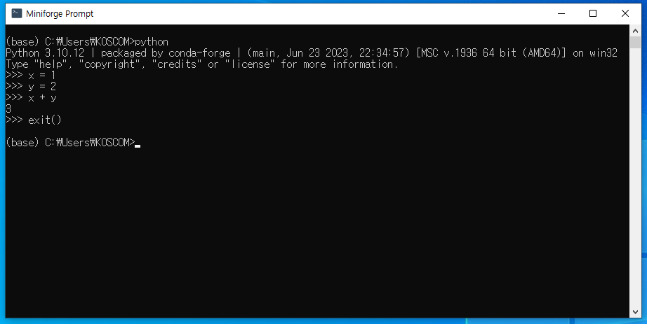
(추가사항) “앱 실행 별칭” 제거
만약 윈도우 환경에서 where python을 실행하였을 때 다음과 같은 항목이 나오면 “앱 실행 별칭” 설정이 되어 있는 경우입니다.
“앱 실행 별칭” 설정이 되어 있으면 파이썬 명령을 사용할 때 윈도우 스토어(Store) 화면이 뜨면서 별도의 파이썬 설치를 요구하기 때문에 필요가 없는 경우에는 “앱 실행 별칭” 설정을 끄는 것을 권장합니다. “앱 실행 별칭” 설정을 끄는 방법은 다음과 같습니다.
- 좌측 하단의 윈도우 버튼을 클릭하여 “설정” 아이콘을 실행하거나 검색창에서 “설정”을 입력하여 설정화면을 실행합니다.
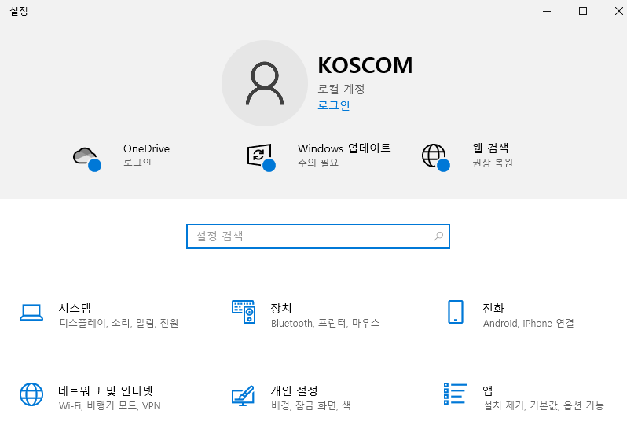
- 설정화면에서 “앱” 메뉴를 클릭하여 앱 설정 화면으로 들어갑니다.
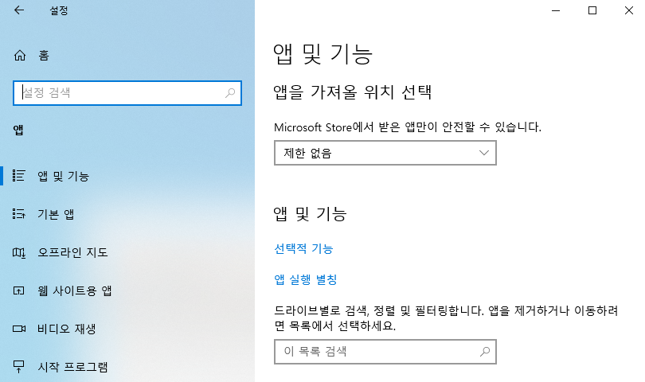
- 화면 중앙의 “앱 실행 별칭” 메뉴를 클릭하여 다음과 같은 화면이 나오면
python.exe,python3.exe,python3.7.exe등의 항목에 대해 “끔”을 선택하면 됩니다.
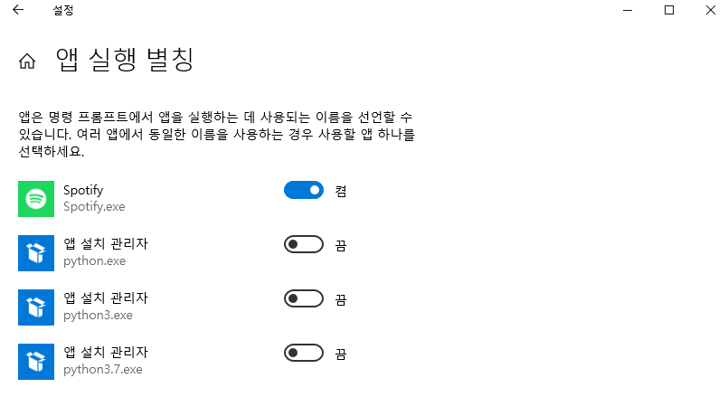
(추가사항) 명령 프롬프트에서 파이썬 사용
Miniforge 배포판을 설치한 직후에는 Miniforge 프롬프트에서만 파이썬 사용이 가능합니다.
Miniforge 프롬프트 뿐 아니라 윈도우 기본 명령 프롬프트(cmd.exe)에서 파이썬을 사용하기 위해서는 추가 섦정이 필요합니다.
- Miniforge 프롬프트(명령 프롬프트가 아닙니다.)를 열고 다음과 같은 명령을 실행합니다.
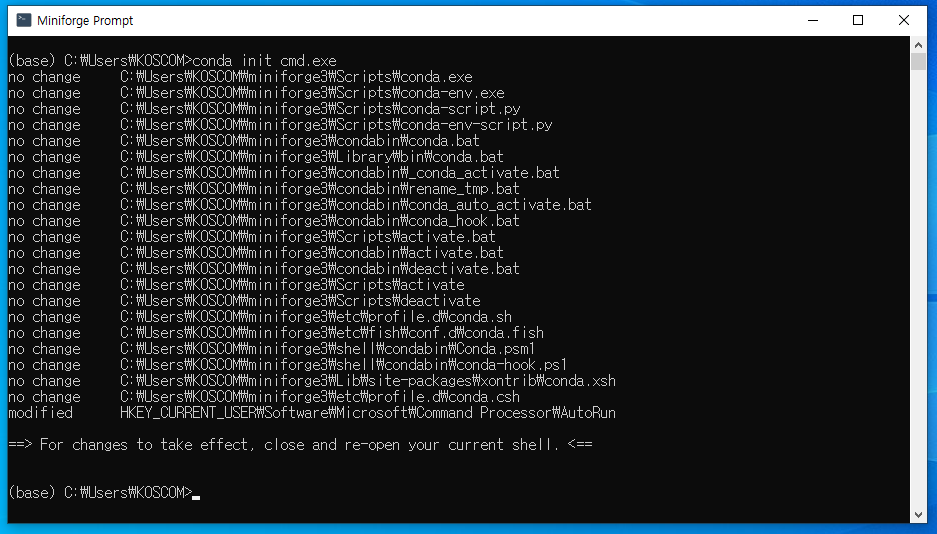
- 명령 프롬프트(Miniforge 프롬프트가 아닙니다.)를 열고 다음과 같은 명령을 실행합니다.
화면의 프롬프트 앞에 (base)라는 글자가 나타나면 python 명령으로 파이썬을 실행할 수 있습니다.
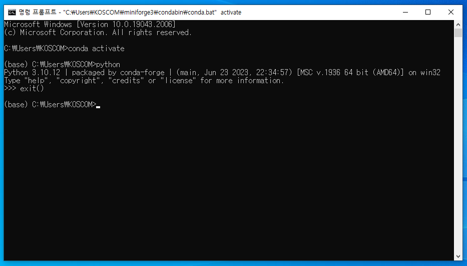